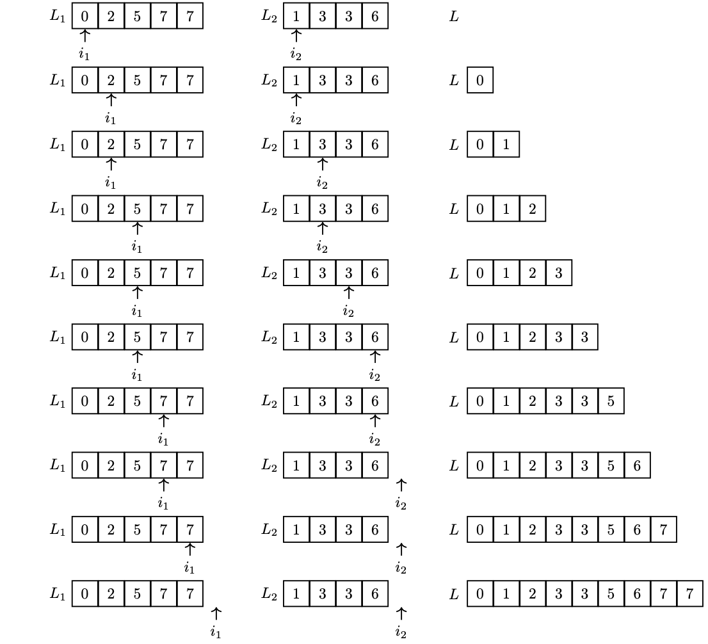
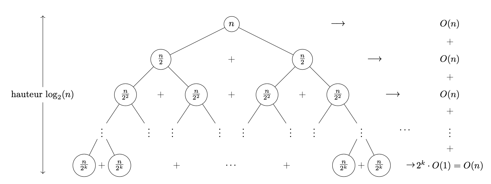
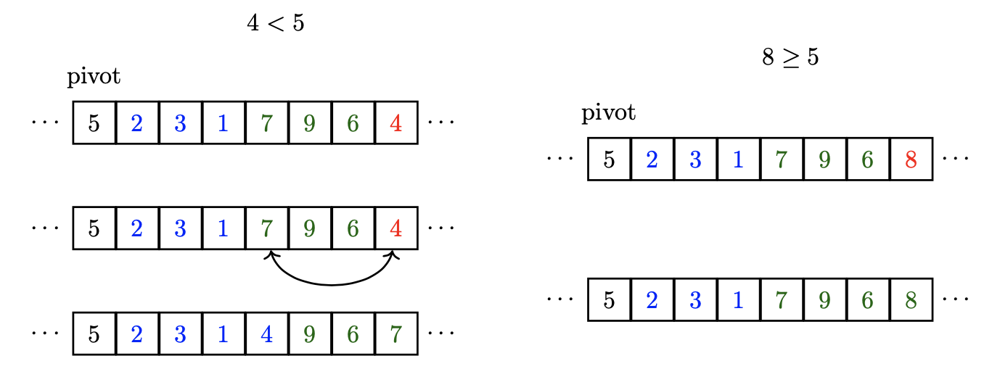
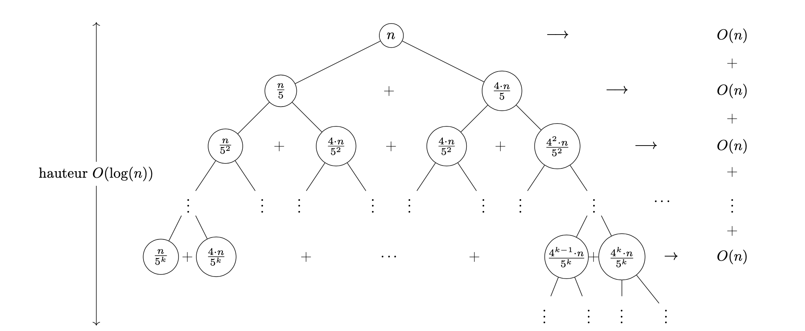
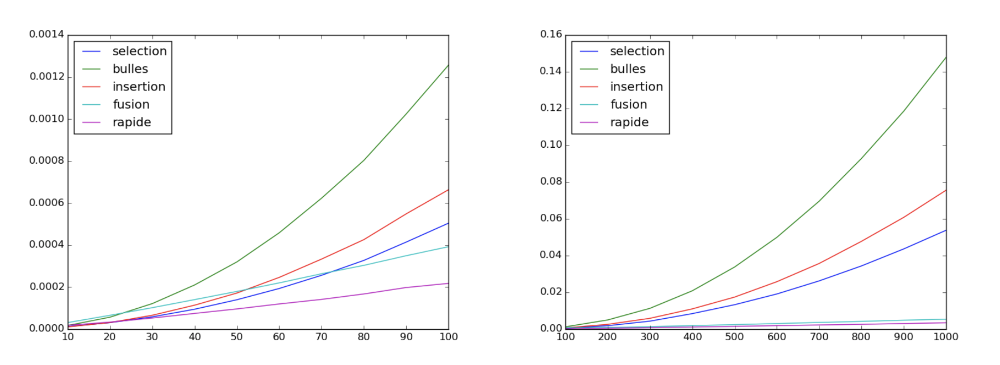

Ce chapitre se concentre sur les algorithmes de tri performants, conçus pour traiter efficacement des listes volumineuses. Nous nous intéresserons particulièrement à deux méthodes : le tri fusion et le tri rapide.
chap2.py référencé par ton cours n'a pas été fourni. Le code ci-dessous a été reconstruit pour correspondre fidèlement à la description algorithmique et aux preuves de ton .tex (mêmes noms de fonctions, mêmes invariants) — à vérifier ligne à ligne face à ton fichier original si tu me l'envoies.Ces deux algorithmes s'appuient sur la stratégie « diviser pour régner ». Ils surpassent en efficacité les tris quadratiques (vus en première année) dès que le nombre d'éléments à trier excède environ 50.
Le tri fusion présente une complexité quasi-linéaire $O(n \log n)$ même dans le pire scénario. En revanche, le tri rapide peut atteindre une complexité quadratique dans le pire cas, bien qu'il affiche généralement une performance quasi-linéaire en moyenne.
Un avantage notable du tri rapide est qu'il s'effectue en place, c'est-à-dire sans nécessiter de mémoire supplémentaire significative, contrairement au tri fusion. Cette caractéristique en fait souvent l'option la plus efficace en pratique.
Il existe également un autre algorithme, le tri par tas, qui combine les avantages d'une complexité quasi-linéaire dans le pire cas et d'un fonctionnement en place. Ce dernier pourrait faire l'objet d'une étude approfondie ultérieure.
On rappelle ici les principes de la stratégie « diviser pour régner » :
Concrètement, pour trier une liste avec ces algorithmes, on la décompose en sous-listes plus petites. Le tri fusion coupe la liste en deux parties de taille similaire. Une fois ces parties triées séparément, on les combine en une seule liste triée. Le tri rapide, lui, choisit un élément (le pivot) et réorganise la liste de sorte que tous les éléments plus petits soient à gauche et les plus grands à droite. On répète ce processus sur les deux sous-listes obtenues jusqu'à ce que la liste entière soit triée.
Contrairement aux tris quadratiques vus en première année, le tri fusion proposé dans ce chapitre ne trie pas la liste initiale mais retourne une copie triée : en effet, il est très difficile d'écrire un tri fusion qui utilise un espace mémoire constant en plus de la liste à trier.
Comme nous l'avons vu, la partie la plus délicate du tri fusion est l'opération de fusion. Cette fonction prend en entrée deux listes déjà triées et produit en sortie une nouvelle liste contenant tous les éléments des listes d'entrée, triés dans le même ordre croissant.
Principe. On va parcourir les deux listes de gauche à droite au moyen de deux indices i1 et i2. À chaque étape, le plus petit élément parmi L1[i1] et L2[i2] est ajouté à la fin de la liste L (initialement vide), et l'indice correspondant est incrémenté. Une petite difficulté se produit lorsqu'on a terminé la lecture d'une des deux listes : il faut alors faire attention à ne pas tenter d'accéder à des éléments en dehors des listes.

Code Python. Il s'agit simplement d'une boucle, exécutée au plus $n_1 + n_2$ fois, avec $n_1$ et $n_2$ les tailles des listes L1 et L2 :
def fusion(L1, L2):
n1, n2 = len(L1), len(L2)
i1, i2 = 0, 0
L = []
while i1 < n1 and i2 < n2:
# invariant : L est triée dans l'ordre croissant
# et ses éléments sont ceux de L1[0:i1] et L2[0:i2]
if L1[i1] <= L2[i2]:
L.append(L1[i1])
i1 += 1
else:
L.append(L2[i2])
i2 += 1
# après la boucle : on complète avec le reliquat de la liste non épuisée
L += L1[i1:]
L += L2[i2:]
return L
Terminaison et correction. Faisons une analyse plus détaillée en utilisant le variant et l'invariant de boucle.
L est triée dans l'ordre croissant et ses éléments sont ceux de L1[0:i1] et L2[0:i2] ». L est vide, i1 = i2 = 0, donc l'invariant est vrai.L1[i1], soit L2[i2] à L, en choisissant le plus petit. L reste donc triée et ne contient que des éléments de L1[0:i1] et L2[0:i2].L contient tous les éléments traités, triés dans l'ordre croissant.La terminaison est garantie par le variant de boucle : comme $V$ décroît strictement à chaque itération et est borné inférieurement par 0, la boucle se termine nécessairement en un nombre fini d'étapes. La correction est assurée par l'invariant : à la fin de la boucle, L contient tous les éléments traités de L1 et L2, triés dans l'ordre croissant. Ces deux dernières lignes préservent l'invariant et n'affectent pas la complexité globale.
Complexité. La boucle s'exécute au plus $n_1+n_2$ fois (le variant initial), chaque itération ayant une complexité $O(1)$. La complexité totale de la fusion est donc $O(n_1+n_2)$.
Idée. Si la liste contient 0 ou 1 élément, elle est triée et on retourne une copie de cette liste (L[:]). Sinon, on la coupe en deux (en notant $m = \lfloor n/2 \rfloor$ où $n$ est la taille de la liste), on trie récursivement les deux parties, et on fusionne les deux listes obtenues.
def tri_fusion(L):
n = len(L)
if n <= 1:
return L[:]
m = n // 2
return fusion(tri_fusion(L[:m]), tri_fusion(L[m:]))
Terminaison. Immédiate : si la taille de la liste est au plus 1, on renvoie une copie ; sinon on sépare la liste en deux (0 < m < n), donc les deux listes sont de tailles strictement inférieures à $n$, on appelle récursivement tri_fusion sur les deux listes, puis on fusionne le résultat.
tri_fusion(L) retourne une copie triée dans l'ordre croissant de la liste L si celle-ci est de taille $n$ ».tri_fusion(L[m:]) sont bien des copies triées de L[:m] et L[m:]. Ainsi $P(n)$ est vraie car la fonction fusion est correcte. Par principe de récurrence, tri_fusion(L) est correcte.Complexité. La fonction fusion a une complexité $O(n)$ pour fusionner deux listes de taille totale $n$ ; construire les listes L[:m] et L[m:] prend également un temps $O(n)$. La complexité du tri vérifie, pour $n \geq 2$ :
En résolvant cette récurrence pour les puissances de 2, $C(2^p) = 2\,C(2^{p-1}) + O(2^p)$ pour tout $p \geq 1$. En divisant par $2^p$ :
D'où $C(n) = O(n \log n)$ car $p = \log_2(n)$. Ce résultat s'étend à $n$ quelconque, ce que l'on admettra ici. Dans ce cas, l'arbre des appels récursifs est équilibré : tous les niveaux contribuent pour $O(n)$ à la complexité totale.

Le tri rapide a été inventé par Hoare en 1961. Bien implémenté, il est probablement le tri le plus efficace en pratique. Bien que sa complexité dans le pire cas soit quadratique, il possède une très bonne complexité en moyenne. Il a de plus l'avantage de s'effectuer en place, contrairement au tri fusion. Tout comme ce dernier, il repose sur la stratégie diviser pour régner.
Idée. Contrairement au tri fusion, on ne coupe pas arbitrairement en deux. Supposons que l'on veuille trier la séquence 4, 1, 8, 3, 2, 5, 7, 6. On choisit le premier élément (c'est arbitraire) comme pivot, et on sépare les autres éléments en deux ensembles : {1, 2, 3} et {5, 6, 7, 8}. Les éléments du premier ensemble sont plus petits que le pivot, ceux du deuxième plus grands. Il suffit alors de trier récursivement les deux ensembles pour obtenir une liste triée, en intercalant le pivot au milieu.
L'avantage du tri rapide sur le tri fusion est qu'il peut s'écrire facilement « en place », sans recourir à des listes intermédiaires : on travaille sur des portions de la liste initiale. La fonction à écrire prend en entrée une liste L, et deux indices g et d délimitant la sous-liste à partitionner, L[g:d] (avec $d-g \geq 2$). L'idée :
L[g].g).
Code Python. On repère par un indice m la position de l'élément le plus à droite parmi ceux strictement inférieurs au pivot :
def partition(L, g, d):
pivot = L[g]
m = g
for i in range(g + 1, d):
if L[i] < pivot:
m += 1
if m < i:
L[m], L[i] = L[i], L[m]
if m > g:
L[g], L[m] = L[m], L[g]
return m
for bornée). Invariant de boucle $Inv_i$ : « les éléments de L[g+1:m+1] sont strictement inférieurs au pivot L[g], les éléments de L[m+1:i] lui sont supérieurs, avec $i \geq m+1$ ».L[i] >= pivot, on ne fait rien ; si L[i] < pivot, on incrémente m puis on échange L[i] et L[m] : $Inv_{i+1}$ est vrai. Par suite $Inv_d$ est vrai en fin de boucle, et le dernier échange amène le pivot en position m, qui est renvoyée.Complexité. La complexité de partition(L, g, d) est $O(d-g)$, la taille de la portion.
Idée. Si l'on a une portion délimitée par g (inclus) et d (exclus) à trier : si $g \geq d-1$, la portion possède 0 ou 1 élément et est déjà triée ; sinon, on réalise une partition avec ces indices, on obtient l'indice m du pivot, et il suffit de recommencer sur les portions $(g, m)$ et $(m+1, d)$.
def aux(L, g, d):
if g < d - 1:
m = partition(L, g, d)
aux(L, g, m)
aux(L, m + 1, d)
def tri_rapide(L):
aux(L, 0, len(L))
La fonction tri_rapide se contente d'appeler aux entre les indices 0 et len(L). Les preuves de terminaison et de correction sont très semblables à celles du tri fusion.
partition réalise une très mauvaise partition (le pivot renvoyé est en position 0) ; aux(0,0) ne fait rien, et aux(1, len(L)) revient à recommencer sur L[1:]. Le tri est alors quadratique en nombre de comparaisons — pas meilleur qu'un tri par sélection.Complexité — meilleur cas. Si chaque appel à partition sépare les éléments en deux parties égales à un élément près, la complexité est en $O(n \log n)$, la récurrence étant, à peu de chose près, celle du tri fusion.
Complexité — cas moyen (heuristique). Considérons une situation où les partitions ne sont ni mauvaises ni très bonnes, par exemple toujours un cinquième des éléments d'un côté et quatre cinquièmes de l'autre. L'arbre des appels récursifs est tordu par rapport à celui du tri fusion (les portions de droite sont plus grandes), mais la portion de droite étant de taille $\frac{4^k n}{5^k}$, la hauteur reste en $O(\log n)$ car $\left(\frac{4}{5}\right)^k n \leq 1$ pour $k \geq \log_{5/4}(n)$. Chaque niveau étant en $O(n)$, la complexité reste en $O(n \log n)$ — même avec un ratio plus défavorable comme $\frac{1}{100}, \frac{99}{100}$, la conclusion serait la même : c'est seulement dans le pire cas que la complexité devient quadratique.

partition étant linéaire en ce nombre, la complexité moyenne du tri rapide est $O(n \log n)$.
Propriétés. L'avantage du tri rapide sur le tri fusion est qu'il s'effectue en place. Par contre, il n'est pas stable.
Optimisations. Une liste déjà triée est un pire cas pour le tri rapide. Plutôt que de mélanger la liste au préalable, il est plus judicieux de modifier partition pour que le pivot de L[g:d] ne soit pas systématiquement L[g], mais un élément pris au hasard dans L[g:d] :
from random import randint
k = randint(g, d - 1)
L[g], L[k] = L[k], L[g]
où randint(a, b), importée du module random, retourne un élément aléatoire de l'intervalle $[a,b]$. Une deuxième optimisation possible : si l'algorithme (même dans sa version aléatoire) est proche du pire cas, on risque sur de grandes listes de dépasser la limite des 1000 appels récursifs imbriqués de Python. Pour y remédier, on peut transformer l'appel récursif sur la plus grande des sous-listes en boucle while.
Le tableau suivant récapitule les résultats montrés sur les deux tris efficaces de ce chapitre :
| Tri | Pire cas | Meilleur cas | Cas moyen |
|---|---|---|---|
| Tri fusion | $O(n \log n)$ | $O(n \log n)$ | $O(n \log n)$ |
| Tri rapide | $O(n^2)$ | $O(n \log n)$ | $O(n \log n)$ |
Les deux graphiques suivants présentent les temps d'exécution des tris de ce chapitre ainsi que des tris naïfs, sur des listes aléatoires de taille variant entre 10 et 1000. On voit qu'il vaut mieux utiliser un tri efficace dès que la taille de la liste atteint quelques dizaines. Pour des listes de taille moyenne (plus de 500 éléments), le temps d'exécution des deux tris rapides est bien inférieur à celui des tris quadratiques.

Sur ces listes aléatoires, le tri rapide est incontestablement le meilleur, alors que si l'on somme les opérations élémentaires effectuées, on trouve un léger avantage au tri fusion ($2n\log_2(n) = \frac{2}{\ln(2)}n\ln(n)$, et $\frac{2}{\ln(2)} \approx 2{,}89 < 4$). L'avantage pratique du tri rapide est dû au fait qu'il s'exécute en place.